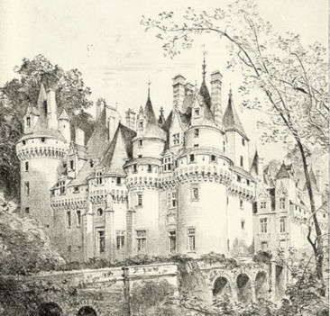

|
 |
An Dara CuidD'iarr sí ar dhomhnall a bheith ag siúl thart go mbeadh am stada ann agus go dtiocfadh an máistir é féin anuas roimhe sin go bhfeicfeadh sé cad é mar a chuaigh an obair chun tosaigh. |
cuid 2
“Bhéarfaidh sé buíochas mór duit nuair a tchífidh sé go bhfuil d'obair lae críochnaithe agat acht ná tabhair aird air óir cuirfidh sé cruaidh go leor ort go fóill.”
Tharla mar a dúirt an bhean óg. tháinig an máistir i dtráth luí na gréine agus d'fhiafraigh sé de dhomhnall an raibh an bóitheach cartaithe agus an leithphingin ar fáil.
“Tá” arsa domhnall agus shín sé chuige an leithphingin.
“Maith thú” arsa an máistir “is tú an buachaill is fearr a fuair mé le fada agus is dóiche liom go ndéanfaidh tú cúis.”
Lá arna mhárach bhí domhnall ina shuí go luath, ach ba luaithe ná sin a d'éirigh an máistir.
“Cad é m'obair inniu?” arsa domhnall.
“Tá, maise,” arsa máistir “crann gloineach atá thíos ansin a bhfuil nead ar a bharr agus ceithre ubh inti; caithfidh tú a dhul suas go barr an chrainn agus na huibheacha a thabhairt anuas gan aon cheann acu a bhriseadh. Má mhilleann tú nó má scoilteann tú an crann agus mura raibh na huibheacha agat domh bainfidh mé an ceann díot anocht.”
D'imigh domhnall ionsar an áit ina raibh an crann ach nuair a thug sé iarraidh a dhul dá chomhair, thoisigh an crann a bhriseadh agus a scoilteadh. Is iomaí iarraidh a thug sé dreapaireacht a dhéanamh suas ar an chrann ach ní raibh gar dó ann; bhriseadh cuid de na géagaibh leis i gcónaí agus b'éigean dó stad fá dheireadh agus suí síos cráite go leor. nuair a rinne sé scíste d'fhéach sé leis an nead a chreachadh arís ach níor éirigh leis, agus bhí sé ag siúl thart fán chrann, nuair a tháinig an bhean óg lena dhinnéar.
D'iarr sí air suí síos agus go bhféachfadh sise an dtiocfadh léithe na huibheacha a fháil. I ndiaidh a dhinnéar thug sí tuadh do dhomhnall agus dúirt leis go gcaithfeadh sé ceithre ceathrúnacha a dhéanamh dhí agus a gcur thart fán chrann agus go n-éireodh leis na huibheacha a thabhairt anuas.
“B'fhearr liom an ceann a chailleadh ná sin a dhéanamh” ar seisean.
“Chan fhuil gar á gcaint” arsa sise, “caithfidh tú an rud a deirim leat a dhéanamh nó mura ndéanfair ní thig liomsa ná leatsa na huibheacha a fháil agus bainfear an ceann díotsa anocht agus ní thug mise chun an bhaile thú le do bhás a tharraingt ort. Seo buidéal íocshláinte agus cuimil domh é nuair a thiocfas tú anuas agus beidh mise chomh slán, folláin agus a bhíos riamh.”
Gidh gur mór a chuaigh sé in aghaidh thola dhomhnaill a leithéid sin de dhroch-bhaile a thabhairt uirthi, ghlac sé a comhairle agus d'éirigh leis a dhul suas ar an chrann. Nuair a tháinig sé anuas chuimil sé an íocshláinte don mnaoi óig agus sheas sí suas chomh maith agus a bhí riamh.
Chuir sí cuntas ar na huibheacha agus ní bhfuair sí ann ach triúr agus d'fhiosraigh sé de dhomhnall cad é a d'éirigh don cheann eile nó ar bhris sé é. Dúirt sé gur bhris.
Rug sí ar an tua agus ghearr sí an ladhar bheag dí féin, agus rinne sí ubh dhe.
“bí ag siúl thart go dtí an tráthnóna“ ar sí “agus tiocfaidh m'athair chugat agus nuair a tchífidh sé go bhfuil na huibheacha agat dó, bhéarfaidh sé buíochas mór duit ach bí air d'fhaichill roimhe nó cuirfidh sé géar ort go fóill.”
Tháinig an máistir agus thug domhnall na huibheacha dhó.
“Is tú an buachaill is fearr a bhí agam riamh.” ar sé.
An tríú lá bhí an máistir ina shuí roimh dhomhnall, mar ba ghnách, agus nuair a d'fhiafraigh sé, “cad é atá le déanamh agam inniu”? thaispeáin an máistir ardán bán dó agus dúirt leis go gcaithfeadh sé caisleán agus cúirt a dhéanamh ann le bealaí móra agus ballaí, abhaill(úllghort) agus gárrdha a mbeadh an uile chineál crann agus luibh iontu dár fhás riamh i ngárrdha duine uasail “agus mura mbeidh sin déanta agat roimh an oíche, bainfidh mise an ceann díot,” ar sé.
Thug domhnall leis a chuid óirnéis agus thoisigh ar an ardán bán agus d'oibrigh chomh cruaidh agus a tháinig leis, ach is mó a bheadh scríobtha ag cearc i dtaobh claí lá gréine ná a bhí glanta amach aige nuair a tháinig iníon a mháistir lena dhinnéar chuige.
D'iarr sí air suí síos agus a dhinnéar a dhéanamh agus go bhféachfadh sise cad é a thiocfadh léithe a dhéanamh.
Tharraing sí ceirtlín de shnáth shíoda as a póca agus thomhais sí thart fad agus leithead an chaisleáin léithe agus ní luaithe a bhí sin déanta ná d'éirigh suas caisleán breá álainn a bhí maith go leor ag rí éireann.
Mar a gcéanna leis an abhaill agus leis an uile rud dár iarr a hathair a bheith déanta. Leag sí an snáithe síoda thart air agus d'éirigh sé suas réidh, críochnaithe, ar dhóigh nach raibh locht nó spíd le fáil orthu ag aon neach faoin domhan.
| Baile |